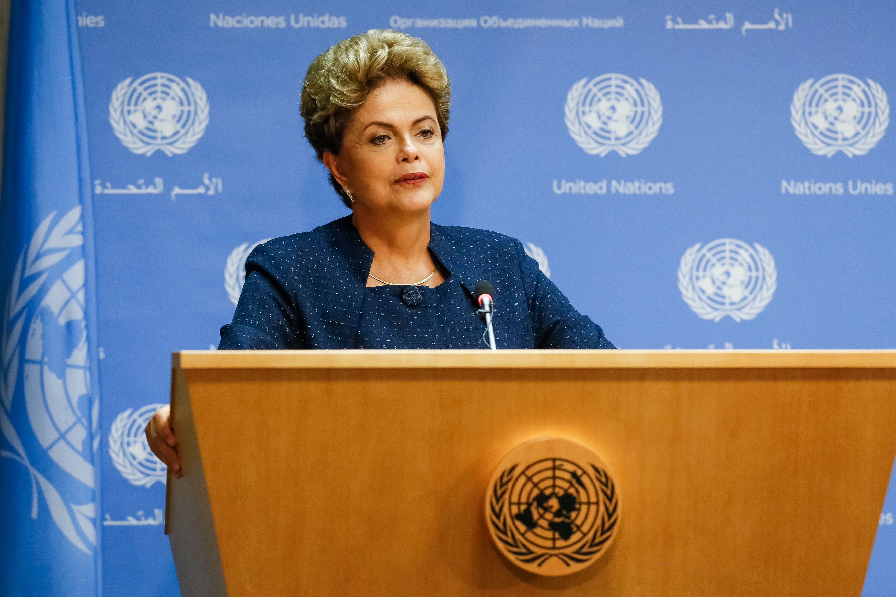

Sua história
Dilma Vana Rousseff nasceu em 1947, filha de pai búlgaro e mãe mineira, irmã de Igor e Zana Lúcia. Graduada em Economia. Desde jovem se interessou pelo socialismo, fazendo parte do movimento estudantil desde o ensino médio. Nessa época, de acordo com ela, ficou "bem subversiva". Percebeu que "o mundo não era pra debutante". Em 1964, ingressou na Política Operária (POLOP). A partir daí se iniciou na militância, destacando-se por sua grande capacidade de liderar, impondo-se diante de homens acostumados a mandar.
Dilma foi a primeira presidenta brasileira, tendo sobrevivido ao horror da ditadura militar. Foi torturada e presa; em 1972 saiu do Presídio Tiradentes, com 10kg a menos e uma disfunção de tireoide. Terminou a faculdade grávida de seu marido, Cláudio Galeno de Magalhães Linhares. Sua única filha, Paula, chegaria em 1976. Sua extensa carreira política vai desde a Secretaria Municipal da Fazenda de Porto Alegre até o cargo de Presidente da República, tendo sido Ministra de Minas e Energia e Ministra-chefe da Casa Civil durante o governo Lula. Em 2016 foi vítima de um golpe arquitetado pela direita através de "um pacto nacional com o Supremo, com tudo". Foi traída até por seu vice, o vampiro Michel Temer. Entre os principais projetos conduzidos como ministra e presidenta estão Luz para Todos, Minha Casa Minha Vida, Brasil sem Miséria, Programa Mais Médicos, Pronatec, PAC e Ciência sem Fronteiras. Uma joia da esquerda focada na diminuição da pobreza, acesso aos direitos fundamentais e na ampliação da educação.